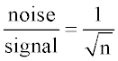
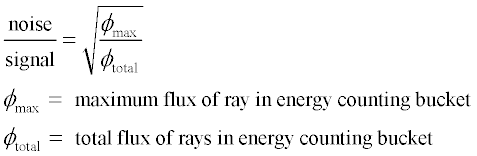

The following commands randomly create rays within a specified volume. The flux of each ray can be modified via an "apodization" function programmed by the user USERAPOD ANGLES/BOTH commands, EMITTING CONE/PYRAMID and EMITTING BOX/SPHEROID.
Extended sources are natural emitters radiating randomly in position and direction, with far-field patterns that are not always isotropic. These kinds of emitters are difficult to simulate using the GRID and RAYSET commands.
The fundamental command is the EMITTING command and its accompanying forms. Since it sets up both ray position and ray direction data (in a random manner to simulate natural emitters such as blackbody radiators), it effectively replaces the usual GRID and SOURCE commands. However, the definition of extended sources basically follows the same prescription, in terms of property definition, as point sources.
The definition is best accomplished with many rays. Most applications probably require in excess of 50,000 rays. (Optionally, you can use XMEMORY MIN and ACCURACY LOW to speed up ray trace times.) A large number of rays is required to reduce the finite sampling error of the calculation.
As an estimate of the error based entirely on ray statistics, the signal-to-noise ratio is traceable to a Bernoulli trial sequence. The signal-to-noise ratio is statistically defined as the ratio of the distribution mean to the square root of the distribution variance within an energy counting bucket. For a Bernoulli trial sequence, the signal to noise ratio is:
In the case of a small probability of a ray getting to the detector,
that is, p<<1, the statistical error reduces to the mean and variances of
a Poisson distribution. The Poisson distribution is the limiting case of the
Bernoulli trial sequence under this condition. The noise-to-signal ratio
becomes:

When other cascading effects such as source apodization and system
transmission are accounted for, the noise-to- signal ratio in an
energy-counting bucket becomes:

The rays created in an EMITTING volume have positions and directions determined by a uniform random number generator. As with all uniform random number generators, number clumping may occur; that is, many numbers are generated close to one another. This closeness leads to ray clumping in both positional and directional coordinates. To help alleviate this problem, instruct ASAP to generate a quasi-random number sequence. This option does a better job of filling in ray coordinates. Access this feature by typing SEED i QUASI where i is up to 40 different sequences. However, the QUASI option can cause the distributions to acquire a regular pattern appearance. See the SEED command for further details.